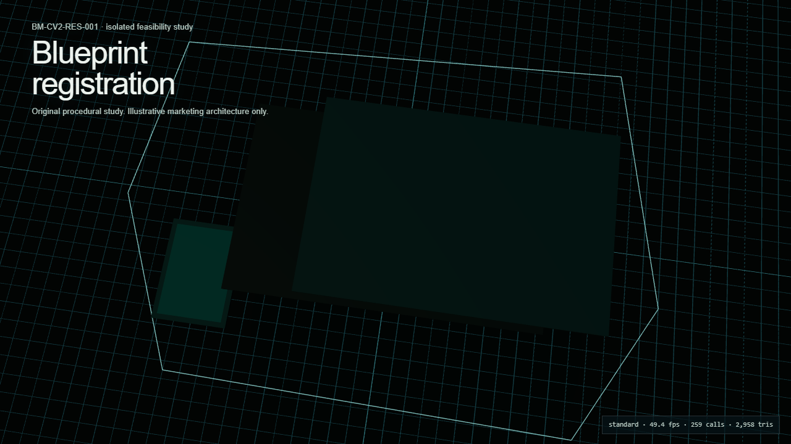
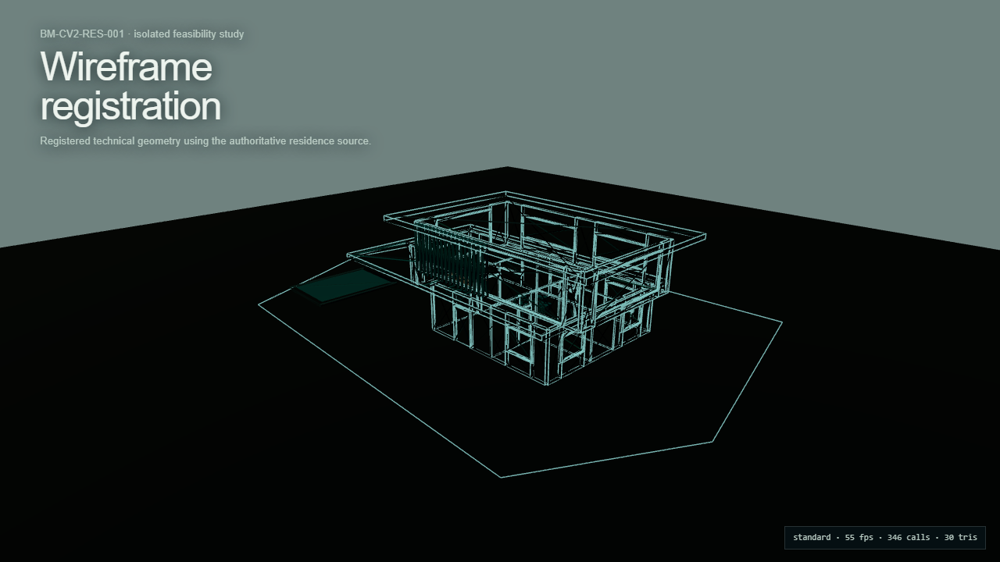
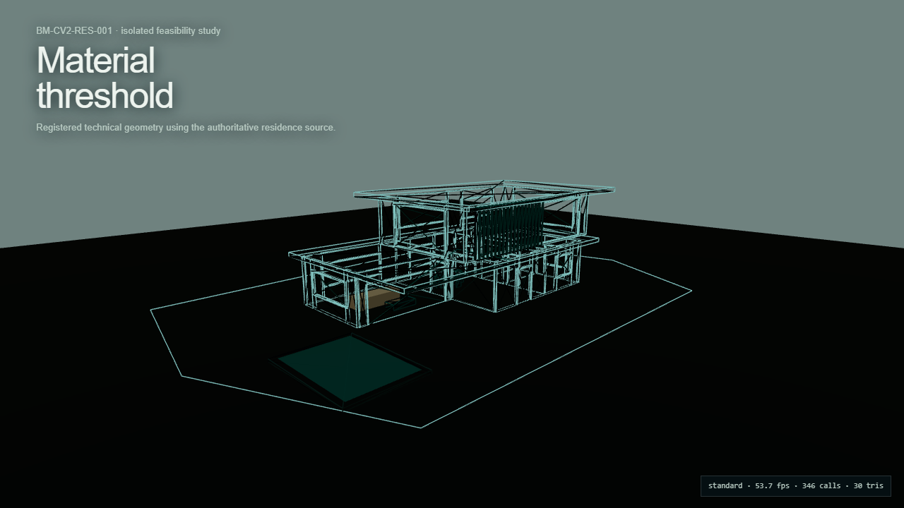
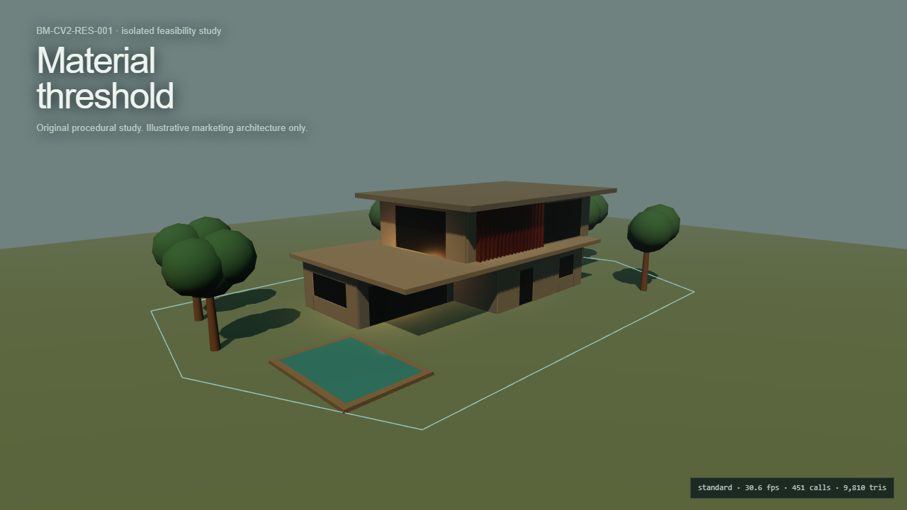
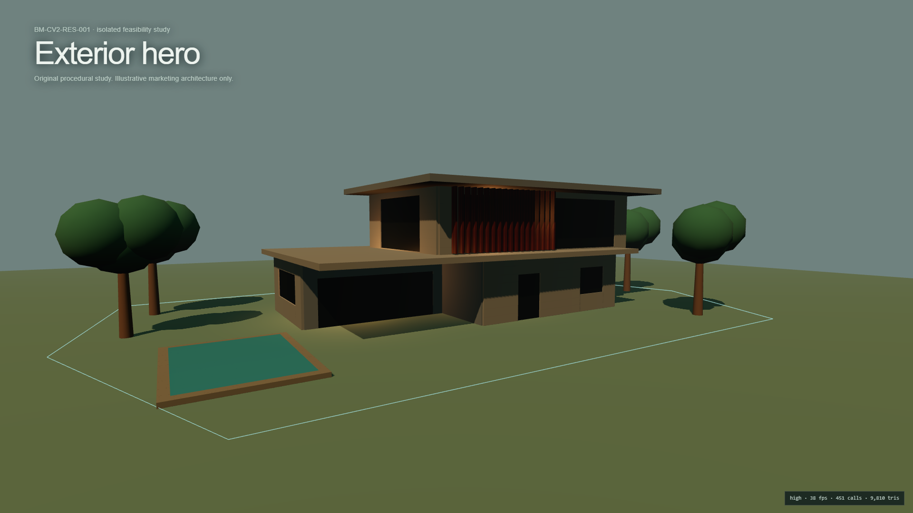
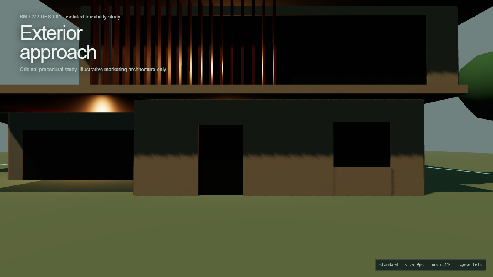
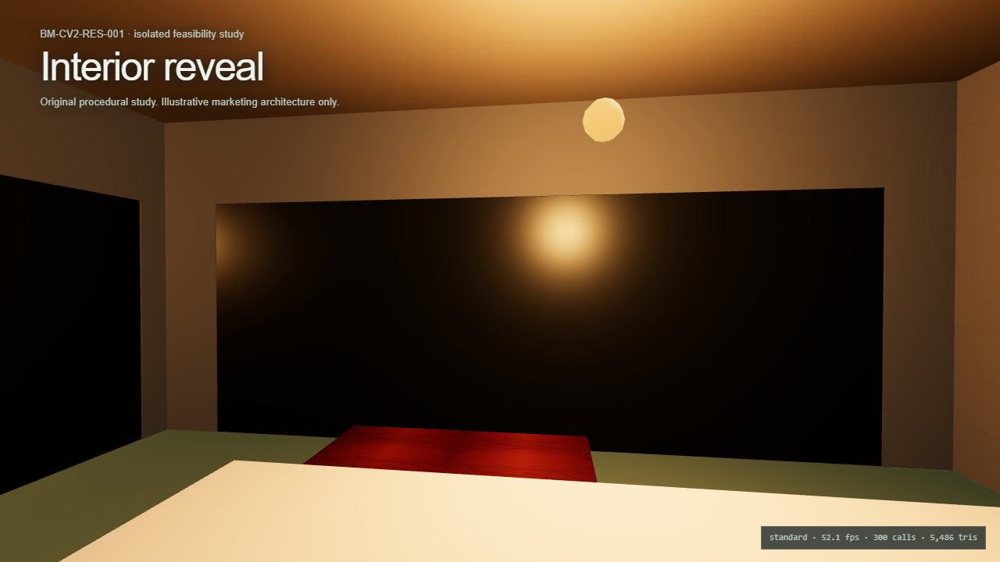

Actual Three.js captures · original procedural assets · not photorealistic production media







Feasibility evidence only. Final premium exterior and interior media require a separate rendering environment.